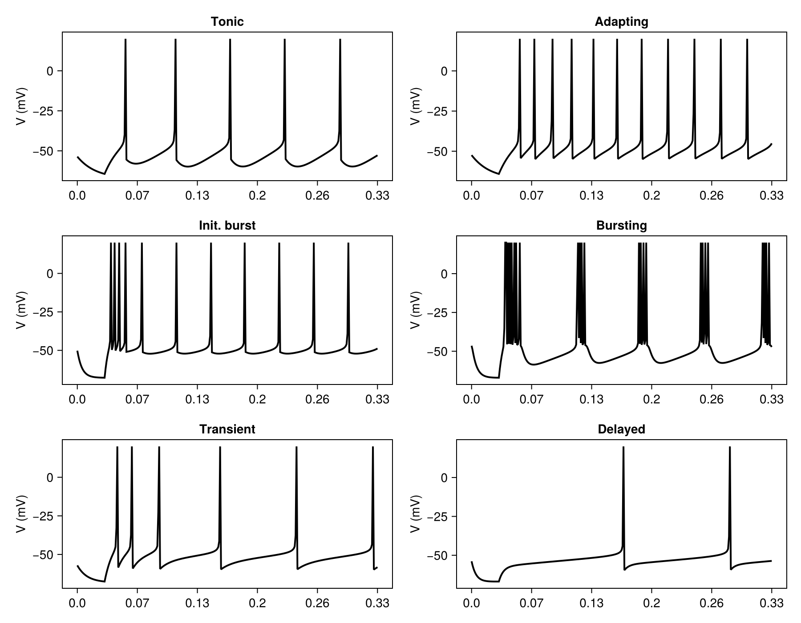
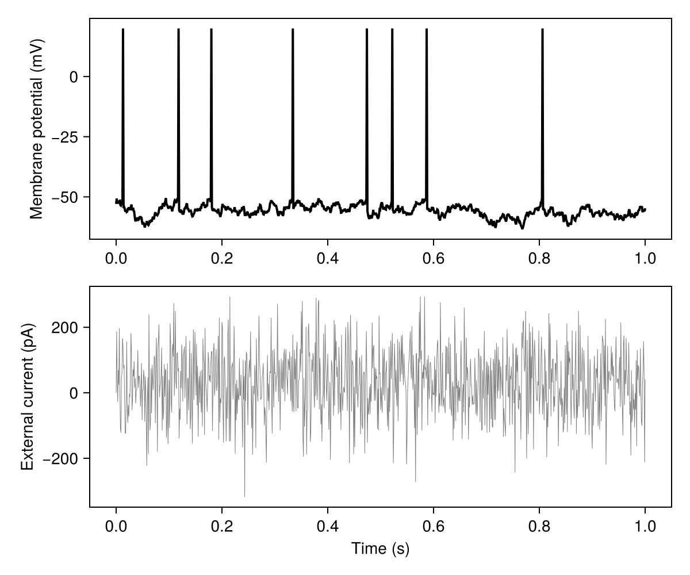
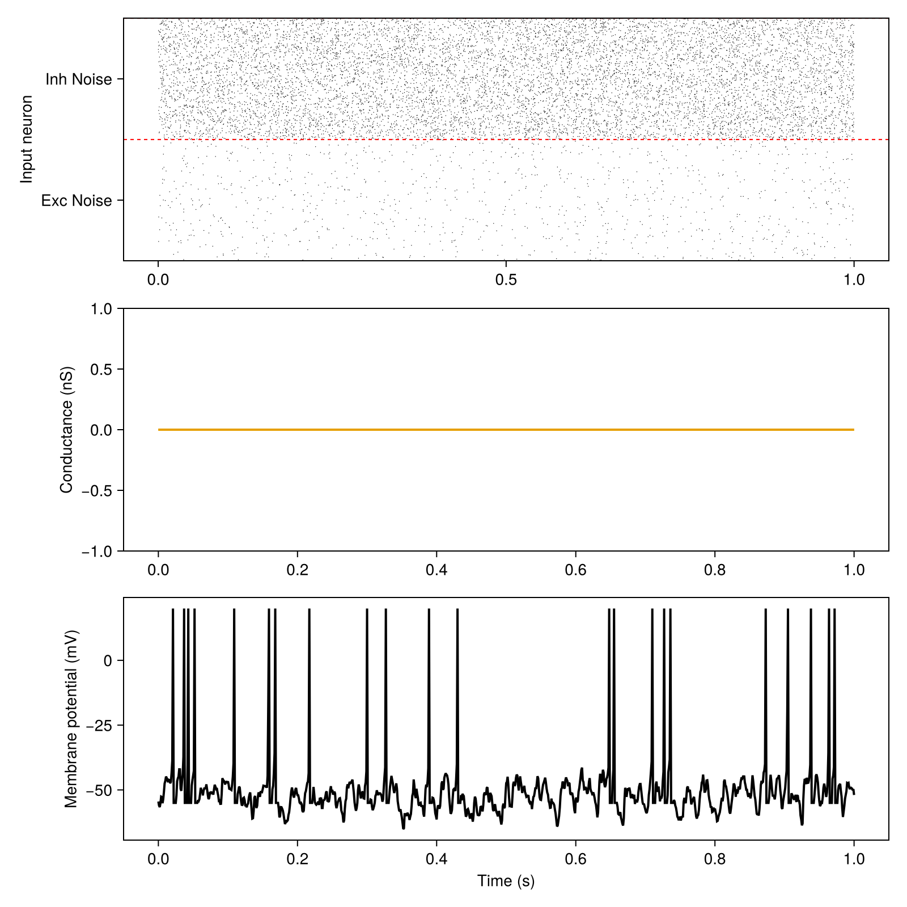
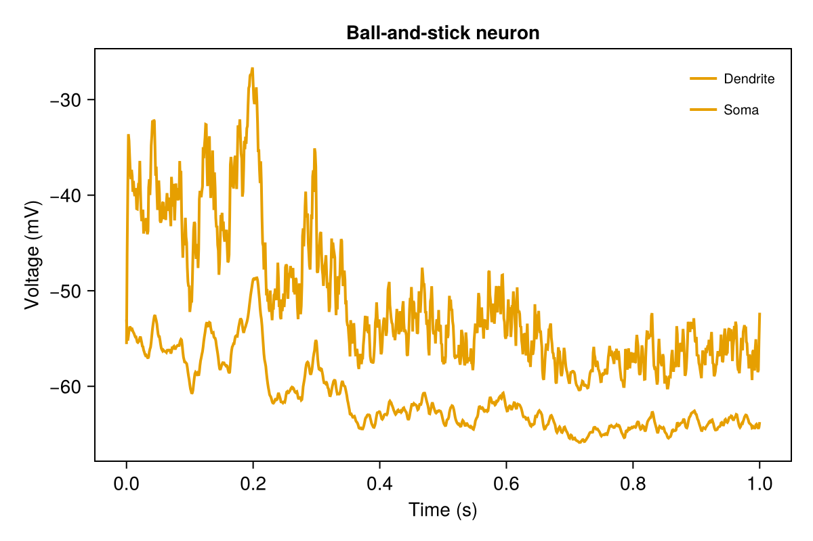

Tutorial: populations
After this tutorial you can build single neurons and populations of several models, drive them with currents and spikes, record their variables and plot them. Details: Populations, Stimuli, Recordings, Model catalogue.
<!– run: sequential –>
One neuron, one current step: AdEx firing patterns
The AdEx neuron (Brette and Gerstner, 2005) gives different firing patterns for different membrane and adaptation parameters. Each panel is one neuron that receives a weak current for 30 ms, then a current step; E.I is the external current.
using SpikingNeuralNetworks
SNN.@load_units
using CairoMakie
using Distributions
# (pattern, τm (ms), a (nS), τw (ms), b (pA), Vr (mV), I (pA))
patterns = [
("Tonic", 20, 0.0, 30.0, 60.0, -55.0, 65),
("Adapting", 20, 0.0, 100.0, 5.0, -55.0, 65),
("Init. burst", 5.0, 0.5, 100.0, 7.0, -51.0, 65),
("Bursting", 5.0, -0.5, 100.0, 7.0, -46.0, 65),
("Transient", 10, 1.0, 100, 10.0, -60.0, 65),
("Delayed", 5.0, -1.0, 100.0, 10.0, -60.0, 25),
]
fig = Figure(size = (900, 700))
for (n, (name, τm, a, τw, b, Vr, I)) in enumerate(patterns)
param = SNN.AdExParameter(
R = 0.5GΩ,
Vt = -50mV,
ΔT = 2mV,
El = -70mV,
τm = τm * ms,
Vr = Vr * mV,
a = a * nS,
b = b * pA,
τw = τw * ms,
)
E = SNN.AdEx(; N = 1, param)
SNN.monitor!(E, [:v, :fire, :w], sr = 8kHz)
model = SNN.compose(; E, silent = true)
E.I .= 5pA # weak current for 30 ms
SNN.sim!(; model, duration = 30ms)
E.I .= I * pA # current step
SNN.sim!(; model, duration = 300ms)
ax = Axis(fig[(n - 1) ÷ 2 + 1, (n - 1) % 2 + 1], title = name, ylabel = "V (mV)")
SNN.vecplot!(ax, E, :v, add_spikes = true, color = :black)
end
save("adex_patterns.png", fig)
A noisy current
CurrentNoise sets the target variable to I_base plus a fresh Gaussian sample at every step; Stimulus(param, population, :I) attaches it to the current I. Population(; param, synapse, spike, N) builds the population that matches param, here an IF.
if_neuron = (
param = SNN.IFParameter(R = 0.5GΩ, Vt = -50mV, El = -70mV, τm = 20ms, Vr = -55mV),
spike = SNN.PostSpike(),
synapse = SNN.SingleExpSynapse(),
)
E = SNN.Population(; N = 1, if_neuron...)
SNN.monitor!(E, [:v, :fire, :I], sr = 2kHz)
# white-noise input current
current_param = SNN.CurrentNoise(E.N; I_base = 30pA, I_dist = Normal(0pA, 100pA))
current_stim = SNN.Stimulus(current_param, E, :I)
model = SNN.compose(; E, I = current_stim, silent = true)
SNN.sim!(; model, duration = 1000ms)
fig = Figure(size = (600, 500))
ax1 = Axis(fig[1, 1], ylabel = "Membrane potential (mV)")
SNN.vecplot!(ax1, E, :v, add_spikes = true, color = :black)
ax2 = Axis(fig[2, 1], ylabel = "External current (pA)", xlabel = "Time (s)")
SNN.vecplot!(ax2, E, :I, color = :gray, lw = 0.5)
save("noise_current.png", fig)
Spikes as input
Two layers of 1000 Poisson neurons, excitatory onto :glu and inhibitory onto :gaba, drive one AdEx neuron into the high-conductance state. The layers are recorded like populations.
neuron_parameter = (
param = SNN.AdExParameter(R = 0.5GΩ, Vt = -50mV, ΔT = 2mV, El = -70mV, τm = 20ms, Vr = -55mV),
synapse = SNN.DoubleExpSynapse(),
spike = SNN.PostSpike(τabs = 5ms),
)
E = SNN.Population(; neuron_parameter..., N = 1)
poisson_exc = SNN.PoissonLayer(rate = 1Hz, N = 1000)
poisson_inh = SNN.PoissonLayer(rate = 10Hz, N = 1000)
conn = (p = 1, μ = 5nS)
stim_exc = SNN.Stimulus(poisson_exc, E, :glu; conn, name = "Exc Noise")
stim_inh = SNN.Stimulus(poisson_inh, E, :gaba; conn, name = "Inh Noise")
model = SNN.compose(; E, stim_exc, stim_inh, silent = true)
SNN.monitor!(E, [:v, :fire], sr = 2kHz)
SNN.monitor!(E, [:glu, :gaba], sr = 2kHz, variables = :receptors) # receptor conductances
SNN.monitor!(model.stim, [:fire])
SNN.sim!(; model, duration = 1000ms)
fig = Figure(size = (800, 800))
ax1 = Axis(fig[1, 1], ylabel = "Input neuron")
SNNPlots.raster!(ax1, model.stim)
ax2 = Axis(fig[2, 1], ylabel = "Conductance (nS)")
SNN.vecplot!(ax2, E, :glu, variables = :receptors, label = "glu")
SNN.vecplot!(ax2, E, :gaba, variables = :receptors, label = "gaba")
ax3 = Axis(fig[3, 1], ylabel = "Membrane potential (mV)", xlabel = "Time (s)")
SNN.vecplot!(ax3, E, :v, add_spikes = true, color = :black)
save("poisson_input.png", fig)
A neuron with a dendrite
BallAndStick couples an AdEx soma to a passive dendrite with NMDA receptors; inputs choose the compartment with an extra argument, :s (soma) or :d (dendrite).
adex = SNN.AdExParameter(C = 281pF, gl = 40nS, Vr = -55.6mV, El = -70.6mV, ΔT = 2mV,
Vt = -50.4mV, a = 4nS, b = 80.5pA, τw = 144ms)
E = SNN.BallAndStick(N = 1, adex = adex,
param = SNN.BallAndStickParameter(ds = [(160um, 160um)]))
stim_exc = SNN.Stimulus(SNN.PoissonLayer(rate = 10Hz, N = 1000), E, :glu, :d;
conn = (p = 1, μ = 1nS), name = "noiseE")
stim_inh = SNN.Stimulus(SNN.PoissonLayer(rate = 3Hz, N = 1000), E, :gaba, :d;
conn = (p = 1, μ = 4nS), name = "noiseI")
model = SNN.compose(; E, stim_exc, stim_inh, silent = true)
SNN.monitor!(E, [:v_s, :v_d, :fire], sr = 1kHz)
SNN.sim!(; model, duration = 1s)
fig = Figure()
ax = Axis(fig[1, 1], xlabel = "Time (s)", ylabel = "Voltage (mV)", title = "Ball-and-stick neuron")
SNN.vecplot!(ax, E, :v_d, label = "Dendrite")
SNN.vecplot!(ax, E, :v_s, add_spikes = true, label = "Soma")
axislegend(ax)
save("ballandstick.png", fig)
More scripts
Runnable scripts in the examples/tutorials folder of the package:
neurons/IF_neuron.jl: IF neuron under Poisson inputneurons/IF_noise_input.jl: IF neuron under a noisy currentneurons/AdEx_neuron.jl: AdEx firing patterns, V and wneurons/AdEx_threshold.jl: AdEx with adaptive thresholdneurons/AdEx_balanced_stimuli.jl: AdEx under balanced Poisson inputneurons/AdEx_multireceptors.jl: AdEx with AMPA, NMDA, GABA receptorsneurons/Izikievich_neuron.jl: Izhikevich firing patternsneurons/HH_neuron.jl: Hodgkin-Huxley f-I curveneurons/MorrisLecar_neuron.jl: Morris-Lecar phase planeneurons/BallAndStick_neuron.jl: ball-and-stick neuron, receptor conductancesneurons/Tripod_neuron.jl: Tripod neuron, receptor conductancesneurons/Tripod_multireceptors.jl: Tripod with several receptorsneurons/tripod2.jl: Tripod under dendritic Poisson inputneurons/HetRec_layer.jl: HetRec layerneurons/PoissonPop.jl: Poisson population: rates and ISI CVtimed_stim.jl: spike-time stimulusnetworks/IF_net.jl: IF networknetworks/HH_net.jl: Hodgkin-Huxley networknetworks/Izikievich_net.jl: Izhikevich networknetworks/AdEx_net.jl: AdEx network with heterogeneous parameters and delaysnetworks/AdExVarStimuli.jl: network driven by a time-varying Poisson ratenetworks/COBA.jl: conductance-based benchmark networknetworks/CUBA.jl: current-based benchmark networknetworks/afferent_response.jl: network rate against afferent ratenetworks/weak_strong_afferents.jl: synchrony against afferent ratenetworks/ParadoxicalEffect.jl: paradoxical response of an inhibition-stabilised networknetworks/passive_vs_active_dendrites.jl: networks of passive and NMDA-active dendritesnetworks/out_degree.jl: out-degree of the connectivity rulesanalysis/recordings.jl: every way to read a recording